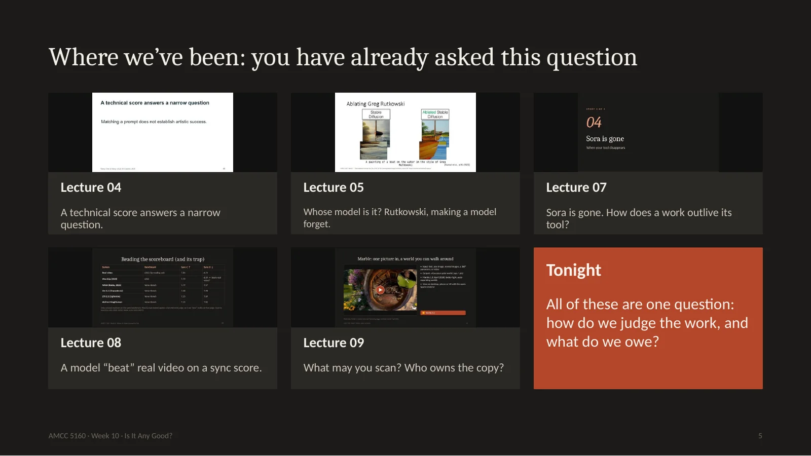
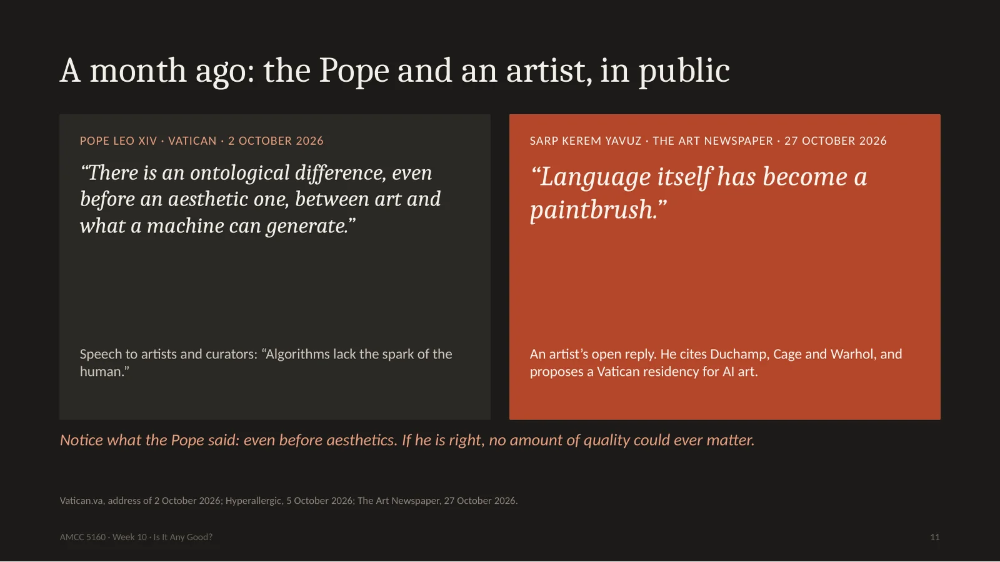
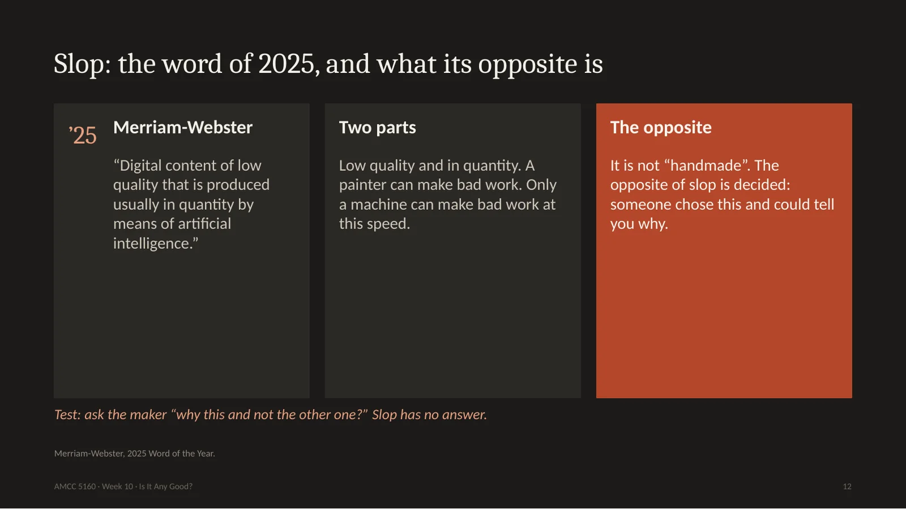
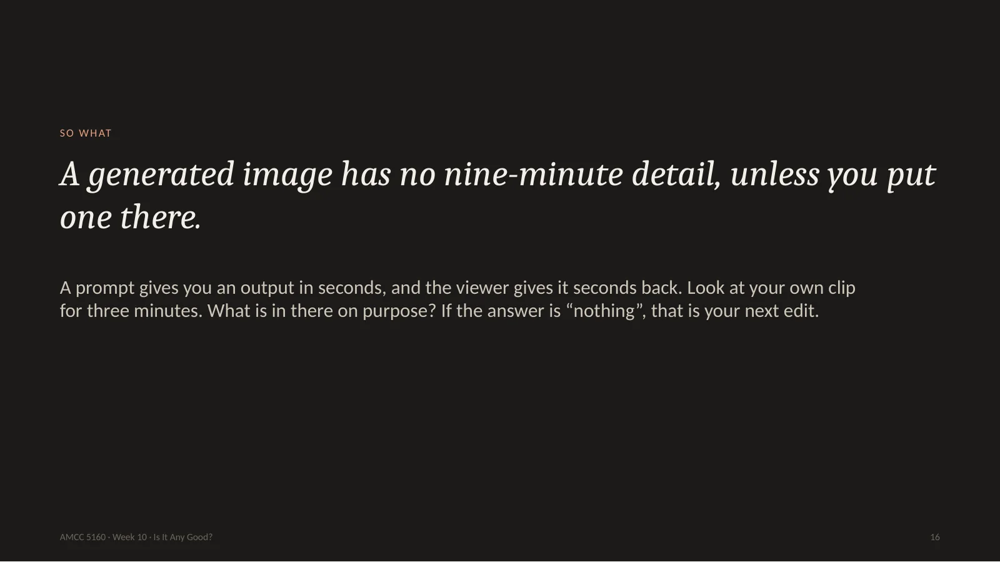
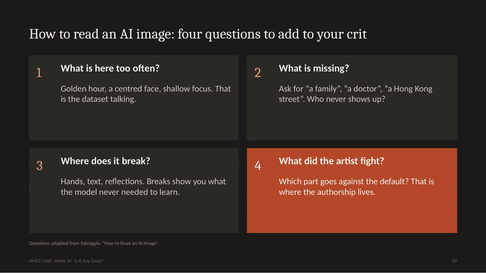
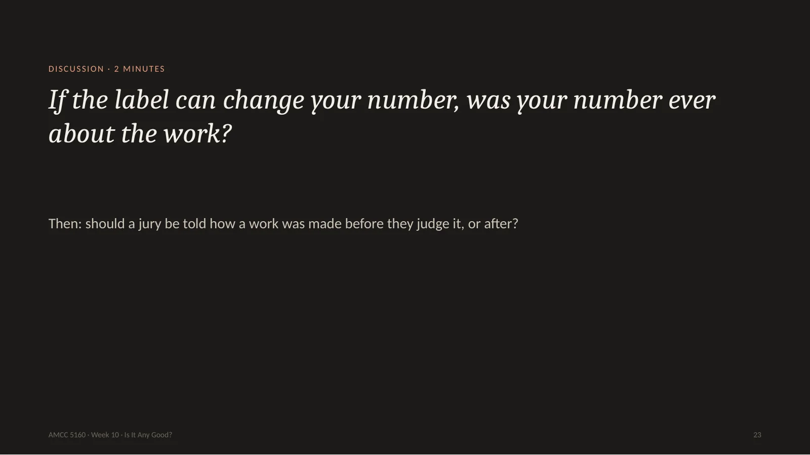
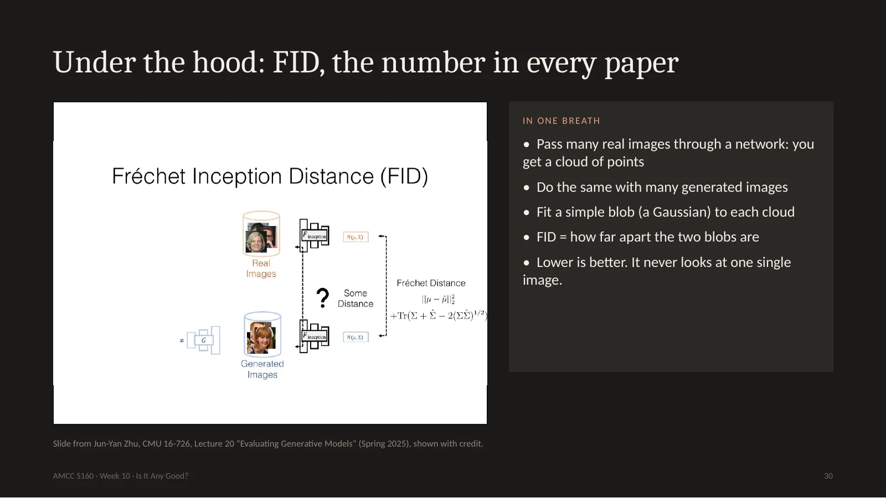
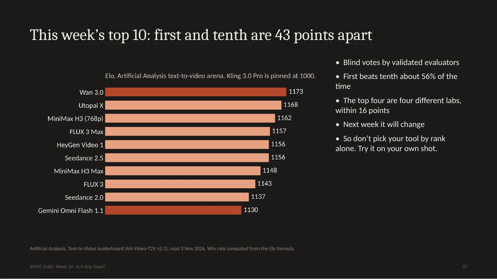

Good evening, and welcome to Week 10. For nine weeks I have taught you how to make things: images, motion, long takes, voices, worlds. Tonight is a different kind of class. Tonight we ask the question every artist hears at the end. Is it any good? And how would you know? There is more art than usual tonight, about two thirds, and about one third technique. By the end you will be able to run a proper critique, read a leaderboard without being fooled, and sign your own work. You need all three for your final presentation in two weeks.
Let's start with a game. Look at this picture for ten seconds. A grand hall, figures in robes, a big round window of light. Now give it a score from one to ten and hold up your fingers. Don't look at your neighbour. Good. Remember your number, because I am going to ask you for it again in one minute.
Here is what you just looked at. It is called Théâtre D'opéra Spatial, by Jason Allen. In 2022 it won first prize in the digital art category at the Colorado State Fair. He made it with Midjourney, and he says he worked through at least 624 prompts and then edited it by hand. He credited Midjourney on the entry, but the two judges did not know it was an AI. When they found out, they said they would have given him the prize anyway. The public was furious. The US Copyright Office later refused to register it, and that case is still in court today. Now, hold up your number again. Did it go up? Did it go down? The picture has not changed by one pixel. Only what you know about it has changed. Remember that. It is the whole lecture in one minute.
这张图叫《太空歌剧院》，作者 Jason Allen。2022年它在科罗拉多州博览会拿了数字艺术一等奖，用 Midjourney 做，他说至少用了624条提示词，再手工修改。评委当时不知道它是AI，事后说照样会给奖；公众却很愤怒。美国版权局后来拒绝登记，官司至今未结。现在再举一次手：分数变了吗？图一个像素都没变，变的只是你知道的信息。这就是今晚的全部内容。
We have four stories tonight, the same format as the last three weeks. One: looking. How do you actually critique a work made with AI? Two: measuring. This is the technical part. What do the numbers in the papers mean, and what can they never see? Three: showing. What happens when the work leaves your laptop and goes into a museum or a festival? Four: signing. What do you owe your audience, and how does the technology of labels really work? Almost everything tonight happened in the last few months, some of it in the last few weeks.
今晚四个故事。一，看：怎么点评 AI 作品。二，量：技术部分，论文里的数字是什么意思，它们看不到什么。三，展：作品走进美术馆和电影节之后发生什么。四，署名：你欠观众什么，标注技术到底怎么工作。几乎都是最近几个月甚至几周的事。

5. Where we’ve been: you have already asked this question
You have been circling this question all term. In Lecture 4 I said a technical score answers only a narrow question. In Lecture 5 we asked whose model it is. In Lecture 7 Sora disappeared, and we asked what a work needs to outlive its tool. In Lecture 8 we saw a model beat real video on a lip-sync score, and I promised we would come back to that trap. Last week we asked who owns a scan of a place. Tonight we pull these threads together.
I looked at how other universities teach this, and there are really two classrooms. In the engineering classroom, at Stanford and CMU, evaluation means a number. I will use Jun-Yan Zhu's slides from CMU and Stefano Ermon's from Stanford. In the art classroom, at Harvard, and in courses like Eryk Salvaggio's and Hamilton's How to Read AI Images, evaluation means slow looking and arguing. Almost nobody teaches both in one night. That is what we will try. Engineering asks how close is it. Art asks what does it do to you. You need both answers.
Story one: looking. Before any metric, before any law, somebody has to look at the thing. And it turns out that looking is a skill, it can be taught, and a generator has made it more valuable, because the one thing a generator cannot do for you is spend time.
This question is old. In 1859 the poet Baudelaire called photography the refuge of every failed painter. In 1917 Duchamp signed a urinal, the exhibition refused to show it, and his friends wrote: he chose it. Around 1969 Vera Molnár was drawing with a plotter, and the art world mostly ignored her. In 2018 a GAN portrait sold at Christie's for 432,500 dollars. In 2022, the state fair. This year a museum of AI art opened in Los Angeles, and a month ago the Pope weighed in. Every time, the argument sounds new. Every time, people are also arguing about who gets to be called an artist.
Here is Baudelaire in 1859. Photography, he says, is the refuge of every would-be painter, too lazy to finish his studies. It should go back to being the servant of the arts. You could post that on social media tonight and just change one word. And look at this cartoon from 1862. Daumier draws the photographer Nadar in a balloon, taking pictures over Paris, and every building below has a sign saying photography. The joke is: elevating photography to the height of art. It's a very good joke. And Baudelaire himself sat for portraits by Nadar. Those photographs are how we know his face today.
Now 1917. A factory urinal, signed R. Mutt, submitted to an open show in New York that had promised to accept everything. They refused it. And Duchamp's friends published this sentence: whether Mr Mutt with his own hands made the fountain or not has no importance. He chose it. That is still the best argument anyone has made for AI art. You did not paint it, you chose it. But be careful. Duchamp's choice cost him something. It was one act, against everybody, and it changed the question. If you choose the nicest of four outputs, a thousand times a day, with no risk at all, is that the same kind of choosing? That's for you to answer.
1917年，一个工厂小便池，签名 R. Mutt，送去一个声称什么都收的展览，被拒。杜尚的朋友写道：他是否亲手做了这个喷泉并不重要，他选择了它。这至今是对AI艺术最好的辩护。但要小心：杜尚的选择是有代价的，一次，对抗所有人，改变了问题。你每天从四张输出里挑最好看的，毫无风险，那是同一种选择吗？

11. A month ago: the Pope and an artist, in public
This is very recent. On the second of October, Pope Leo spoke to artists and curators at the Vatican. He said there is an ontological difference, even before an aesthetic one, between art and what a machine can generate. And he said algorithms lack the spark of the human. Three weeks later, last Tuesday, an artist named Sarp Kerem Yavuz answered him with an open letter in The Art Newspaper, citing Duchamp, Cage and Warhol. Language itself, he says, has become a paintbrush. Look closely at the Pope's words: even before an aesthetic one. He is saying the question of quality comes second. If he's right, a beautiful AI film is still not art. So we need to separate these questions, which brings me to the most useful slide tonight.
这很新。10月2日教皇对艺术家和策展人说：在审美之前，艺术和机器能生成的东西之间就有本体论的差别；算法缺少人的火花。上周二，艺术家 Yavuz 在《艺术新闻》发公开信回应，引用杜尚、凯奇、沃霍尔：语言本身已成为画笔。注意教皇说的是“在审美之前”，质量问题排第二。如果他对，再美的AI电影也不是艺术。所以我们要把问题分开。

12. Slop: the word of 2025, and what its opposite is
Merriam-Webster chose slop as the word of 2025. Digital content of low quality, produced usually in quantity, by means of AI. Two parts: low quality, and in quantity. A painter can make a bad painting, but only a machine can make bad work at this speed. So what is the opposite of slop? Students often say handmade. I don't think so. I've seen plenty of handmade rubbish. The opposite of slop is decided. Somebody chose this, and they can tell you why. Here is my test. Ask the maker: why this one, and not the other one? Slop has no answer to that question.
Here it is. There are four questions that people constantly mix up. One: is it AI? That is a question of fact, and you answer it with evidence. Two: is it good? That is judgment, you answer it by looking and arguing. Three: is it fair? That's ethics. Whose data, whose consent, whose job. Four: is it allowed? That is law, and it differs by country and even by festival. Most fights online happen because someone asks question two and someone else answers question three. A work can be beautiful and unfair. It can be fair and boring. When you critique, always say which question you are answering. Story 1 is mainly question two. Story 2 tries to turn it into a number. Stories 3 and 4 take the others.
You just did this with your fingers, and psychologists did it properly. In 2023 Lucas Bellaiche and colleagues took thirty paintings, all of them made by AI, and randomly told people some were by humans. Same images. People liked the human-labelled ones slightly more. They found them much more profound, and much more valuable. Look at the chart: the effect on liking is small, and the effect on worth is more than three times larger. So people's eyes barely change. What changes is the story they tell about value. There is one hopeful finding: when people felt a stronger story in the AI-labelled work, the gap shrank. It's correlational, but if you want a takeaway for your own work, it is this one. Give us a story.
At Harvard the art historian Jennifer Roberts gives her students an assignment that sounds crazy. Pick one work, go to the museum, and look at it for three full hours. Students complain. Then they come back astonished. She did it herself with this painting by Copley, from 1765. At nine minutes she noticed that the boy's ear has exactly the same shape as the ruff on the squirrel's belly. At twenty-one minutes, that his fingers span exactly the width of the glass below. At forty-five minutes, that the folds of the curtain repeat the shapes of his ear and eye. None of this is visible in the first ten seconds. A person put every one of these there, on purpose.
哈佛的 Jennifer Roberts 让学生选一件作品，在美术馆看满三小时。学生抱怨，回来后都震惊了。她自己看科普利1765年这幅画：第9分钟发现男孩的耳朵和松鼠肚子上的毛形状一样；第21分钟发现手指正好跨过下面玻璃杯的直径；第45分钟发现窗帘褶皱重复耳朵和眼睛的形状。前十秒都看不到，而这些都是人有意放进去的。

16. A generated image has no nine-minute detail, unless you put one there.
So here's the uncomfortable thought. In a painting like that, the time of making leaves traces, and looking slowly gets you closer to those decisions. A generated image also has details, millions of them. But nobody decided them. If you look at one for nine minutes, you often find nothing, or you find the training data, which we will come to. That's not a reason to give up. It's a task. Look at your own clip for three minutes. Ask what is in there on purpose. If the honest answer is nothing, that's your next edit.
Let's practise. This routine comes from Project Zero at Harvard's school of education, and teachers use it with children. Three questions. What do you see? Only facts. What do you think about that? Now you may interpret. What does it make you wonder? Look at this still from a recent film for one full minute in silence. I will time it. Then talk with your neighbour for two minutes. Do not say whether you like it. Liking comes last.
The classic method comes from Edmund Feldman, and it is simply four steps, in order. Describe: what's there, no opinions. A blurred man, a dark coat, a white collar, a pale empty background, and instead of a signature, a mathematical formula. Analyze: how is it built? The head sits high in the frame, almost cut off. The palette and the brushwork look like an Old Master, but no edge holds. Interpret: what does it mean? This GAN saw around fifteen thousand portraits. It paints the idea of a portrait, and it can't hold on to one person. That's actually a nice thought. Judge, at the very end. I find it interesting as an idea and dull as a picture. Notice I had to do three steps before I'm allowed an opinion. Most comments on the internet start and end at step four.
Now here's what is new about looking at AI work. Eryk Salvaggio teaches a course called Critical Topics: AI Images, and he starts with a map. John Snow's 1854 map of cholera in London. Each black mark is a death, and you read the picture to find the data. Salvaggio says every AI image is like that map. It is an infographic about the dataset. Here is his example: DALL-E asked for a bland stock photo of two people kissing. It looks awkward. Why? He went and looked at the training data for kissing, and found stock photographs, where actors are sitting together and asked to kiss. There's no emotion in the data, so there's none in the picture. Hamilton College now has a whole art history course built on this idea.
AI作品的新东西在这里。Salvaggio 开课时先讲一张地图：1854年 John Snow 的伦敦霍乱图，每个黑点是一个死者，你读图来读数据。他说每张AI图都是关于数据集的信息图。例子：让 DALL·E 画两个人接吻，很尴尬。为什么？他去看训练数据，发现都是库存照片，演员被要求接吻。数据里没有情感，图里也没有。Hamilton 学院现在有整门艺术史课基于这个想法。

20. How to read an AI image: four questions to add to your crit
So add these four questions to your critique. What is here too often? Golden light, a centred face, blurry backgrounds. That is the data speaking, not the artist. What's missing? Ask for a family, a doctor, a Hong Kong street, and notice who never shows up. Where does it break? Hands, text, reflections. A break shows you what the model never needed to learn. And the most important one for you as a maker: what did the artist fight? Which part of this work goes against the default? That is where the authorship lives. When you did the reverse engineering for Assignment 2, you were already doing this.
This default is now measurable. Arend Hintze's group played a game of telephone between two AIs. Stable Diffusion draws a picture, another model describes it, and that description becomes the next prompt. A hundred rounds. They started from a hundred very different prompts. And no matter where they started, the images drifted to about twelve themes. Gothic cathedrals, natural landscapes, sports, stormy lighthouses. The reason is simple. That's what people chose to photograph and upload. Hintze says AI is really good at the first part of creativity, and really bad at the second part. The second part means selecting what's worth keeping. That's your job. Hito Steyerl has a name for these pictures. She calls them mean images. Mean as in average, and mean as in cruel.
这种默认现在可以测量。Hintze 组让两个AI玩传话：SDXL画图，另一个模型描述，描述当下一轮提示词，一百轮。从一百个很不同的提示词出发，都漂到大约十二个主题：哥特教堂、自然风景、体育、风暴灯塔。原因很简单：这些是人们爱拍爱传的。Hintze说AI很擅长第一步，很不擅长第二步，也就是选择什么值得留下。那是你的工作。Steyerl 称之为 mean images：平均，也是刻薄。
Here are four tools, and when to use each. See, Think, Wonder for meeting a new work. Feldman's four steps when you write. Stanford's I Like, I Wish, What If for a classmate's draft. It is the fastest of all. Liz Lerman, the choreographer, invented the Critical Response Process, and I love it because the artist goes first. First the audience says what was meaningful. Then the artist asks the questions they want answered. Then the audience asks neutral questions. Opinions come only at the end, and only with permission. On November 17 and 24, for the final presentations, we will use the last two. You will ask us first. And please, an I wish is not an insult, as long as it comes with a what if.
四个工具。见到新作品用 See-Think-Wonder；写评论用 Feldman 四步；同学的草稿用斯坦福 d.school 的 I Like, I Wish, What If，最快。编舞家 Liz Lerman 的 Critical Response Process 我最喜欢，因为艺术家先开口：观众先说哪里有意义，艺术家提问，观众问中性问题，最后才在获得同意后给意见。11月17、24日期末展示就用后两种。

23. If the label can change your number, was your number ever about the work?
Two minutes with your neighbour. If a label can change your number, was your number ever about the work? And a practical version: should a jury be told how a work was made before they judge it, or only after? The Colorado judges did not know, and they said it would not have changed their minds. Think about your own answer, because in the next story, machines are going to give their number.
Story two is the technical part of tonight. You read papers and press releases that say: our model scored 8 percent better. Better at what? In this story I'll explain how these numbers are made, with slides borrowed from CMU and Stanford, and with some experiments we ran this afternoon. No heavy mathematics. You just need to know enough to not be fooled.
Stefano Ermon opens this topic at Stanford with a very good question. What is the task you care about? If you build a classifier, it is easy: there's a right answer, and you count mistakes. A generator has no right answer. His slide says humans are the gold standard, but slow, biased and hard to repeat. And look at this line: memorizing the training set would give excellent samples, but it's clearly undesirable. Please hold on to that sentence. A plagiarist gets excellent marks on many of these tests.
There are basically three ways to score. One: compare with reality. Either compare pixels, or compare features, what a neural network sees. Two: ask another model. Show it the video and ask, is the horse on the grass? Three: ask people. Show them two videos and ask which they prefer, then compute a ranking. All three answer a smaller question than, is it good. Let's try the first one on a painting you know.
Here is a game. A is Van Gogh's Starry Night. I made six versions. B is the same image, moved eight pixels to the right. Can you see it? C is mirrored. D is compressed with very heavy JPEG. E is blurred. F has its colours changed. G is cut into squares and shuffled. Now you are the metric. Which one is closest to the original? Which is furthest? Take twenty seconds, and I'll ask for a show of hands for B, then D, then E.
This is what we measured this afternoon. PSNR is the oldest score in the book. It takes each pixel and compares it with the same pixel in the original. Look at the dark red bar. B, the version moved by eight pixels, which you can't tell apart from the original, gets 16.6 decibels. The heavily damaged JPEG gets 22. The blurry one gets 20. So according to PSNR, wrecking the picture is better than moving it a tiny bit. SSIM, the more modern pixel score, says the same thing, even more strongly. Your visual system doesn't work like this. It doesn't care where exactly a pixel is. So if a paper reports PSNR for video, be careful about what it means.
So researchers stopped comparing pixels and started comparing features: what a neural network sees. Here we use CLIP. Now the shifted and mirrored versions are almost perfect, 0.997 and 0.998. That's much more like us. But look at the bottom. The scrambled one, cut into squares, the painting destroyed, still gets 0.87. Right colours, right brush texture, so to the network, it is still rather like Starry Night. And mirroring a painting matters a lot to a painter. The swirl now runs the other way, and the composition reads in the opposite direction. The network hardly cares. Better, but it isn't looking the way Jennifer Roberts looks.
所以研究者改比特征，也就是网络看到的。这里用CLIP。移动和镜像几乎完美，0.997、0.998，更像人了。但打乱的仍有0.87：颜色和笔触对，画没了。镜像对画家很重要，旋涡方向和构图都反了，网络几乎不在乎。好一些，但它不是 Roberts 那样的看。

30. Under the hood: FID, the number in every paper
Now the number you'll find in nearly every paper: FID, Fréchet Inception Distance. Here's Jun-Yan's slide. Take thousands of real images and pass them through a network. Each image becomes a point, so you get a cloud of points. Do the same with thousands of generated images. Fit a simple blob to each cloud, and measure how far apart the blobs are. Lower is better. That's all of it. Notice something important for artists. FID judges a crowd. It never looks at any one image. There is no such thing as the FID of your film.
Here's a small example I computed, in two dimensions so we can see it. Grey is the real data, orange is the model. On the left, a copycat model that only replays its training set. The distance is 0.00, a perfect score. In the middle, a model making genuinely new things, 0.05, slightly worse. On the right, a model with one idea, always making the same kind of thing. That one gets punished, 1.00. So FID does see boring models. But notice: the plagiarist beats the original artist. That's what Stanford's slide warned us about. And as an artist, you want to be somewhere strange, off the cloud. FID calls that a mistake.
Jun-Yan's lecture also shows how fragile this number is. Same images, saved as JPEG at quality 90: FID 6. At quality 75, which your eye can hardly see: FID 21. Even the choice of resize function in your code moves it from 2.68 to 2.99. And people celebrate papers that improve FID by less than that. His summary is funny. FID lovers say: our model improves from 6.8 to 6.75. FID haters say: stop using metrics and just look at the pixels. His advice: use the metrics, carefully, use several, and test on what you actually want to do.
For video there's FVD, FID's cousin. And here's a very useful slide. Three clips of clouds. The middle one has slightly damaged frames, but the motion is correct. The one on the right has good frames, but the motion is badly broken. A human would say the right one is much worse. FVD gives the right one the better score, 311 against 317. So our main video metric mostly judges frames. It's nearly blind to time. And time is what makes it a film. This is the same trap I showed you in Lecture 8, when a model beat real video on a lip-sync score.
So people tried a better design. VBench, from CVPR 2024, says: stop giving one number. Split video quality into sixteen dimensions, things like temporal flicker, motion smoothness, keeping a subject's identity, colour, and spatial relationships. For each one, prepare about a hundred prompts, and check the measure against what people actually prefer. Now you get this radar shape instead of a rank. I like this very much. It's what a good critic does. Not, this is a seven. Instead: strong motion, weak hands.
VBench 2.0 goes further. It says current models look plausible but aren't truly faithful. It has five dimensions: human fidelity, controllability, creativity, physics, and commonsense. It uses large vision-language models as the graders, which is approach number two: ask a model. This works well for physics. Does the ball fall down? I'm less sure about creativity. Here the word means diversity and composition. And think about commonsense. Most art I admire would fail a commonsense test. Would Duchamp pass? So be careful when a word from art gets borrowed by a benchmark. The word stays the same, and the meaning shrinks.
Approach three: ask people. Show them two videos made from the same prompt, without saying which model made which, and let them pick. Then use the Elo system, invented for chess. If you beat someone stronger, you gain more points. There's one formula on the slide and you don't need to memorize it, you only need to feel what it means. A gap of 100 Elo points means you'd win about 64 percent of votes. A gap of 43 points means 56 percent. That's nearly a coin flip. Keep that in mind for the next slide.
第三种：问人。同一提示词的两段视频，不告诉哪个模型，选一个，再用国际象棋的 Elo 算分。公式不用背，只要有感觉：差100分约赢64%的票，差43分约赢56%，几乎是抛硬币。记住这个，看下一页。

37. This week’s top 10: first and tenth are 43 points apart
Here's the leaderboard as of today, from Artificial Analysis. Wan 3.0 at the top, 1173, then Utopai, MiniMax, FLUX, HeyGen, Seedance. Number ten is Gemini Omni Flash, 1130. The press writes: Wan is number one. But first and tenth are only 43 points apart. In a blind vote, the number one beats the number ten only 56 percent of the time. And this measures the model on general prompts. So don't pick your tool by its rank. Take your actual shot, the one you care about, run it on three of these models, and look.
今天 Artificial Analysis 的榜单：Wan 3.0 第一，1173；第十是 Gemini Omni Flash，1130。媒体写 Wan 第一，但第一和第十只差43分，盲投中第一只赢第十56%。而且这是通用提示词。所以别按名次选工具：拿你真正在乎的镜头，在三个模型上跑，自己看。
Let me say something about what a vote like this rewards. People look for a few seconds and pick. So it rewards sharpness, glossy light, spectacle, and the most obvious reading of the prompt. It can't see a slow build, an ending, or a joke which lands late. And these votes don't only rank models, they can also train them. In our own lab, Harold Chen and colleagues published PhysHPO last year. It teaches a video model preferences at four levels, from the whole clip down to the motion, in order to make physics more plausible. It worked. But it taught me a lesson: what you reward is what you get. So where exactly did the taste of today's models come from? I'll show you. It's a very strange story.
这种投票奖励什么？人只看几秒就选，所以奖励清晰、光泽、奇观和对提示词最明显的理解。它看不到缓慢铺垫、结尾、晚到的笑点。投票不仅排名，还能训练模型。我们组 Harold Chen 等人去年发表的 PhysHPO，在四个层次上教模型偏好，让物理更合理，有效。教训是：你奖励什么就得到什么。那今天模型的品味从哪来？故事很奇怪。
In 2022, the LAION group wanted a better training set. So they built an aesthetic predictor. They asked people: how much do you like this image, from one to ten. They used about a quarter of a million photos from DPChallenge, a photography contest website, plus a set of AI images and logos. Then they trained a very small model on top of CLIP to predict that rating. They ran it across billions of internet images, and kept those scoring five or higher: 600 million. And the team behind Stable Diffusion version 1 used that subset for training. So the taste of some members of an online photo contest, squeezed into one small linear model, was built into a model used by millions of people. Even funnier: they chose the linear version partly because its results looked best to them.
So this afternoon I downloaded an open copy of that predictor and ran it on works from tonight. I want to be clear, this is one reproduction of each work, so it's a demonstration and not a study. Copley gets 6.15, Van Gogh 5.88, fine. Duchamp's urinal gets 5.26. It passes. Now look at the cut-off line. The DALL-E picture, whose prompt literally asked for a soulless, bland stock photo, lands right on the line at 4.997. And Vera Molnár's plotter drawing, in the V&A right now, gets 4.87. It falls below. Same for John Snow's map. Under this rule a bland stock photo is better than Vera Molnár. By this one score, a drawing like that would have been left out of the training data. I find that a very good reason to look at your defaults.
One more, because it's too good. On the left, Van Gogh's Starry Night, 5.88. On the right, I rotated the hue with two lines of code. It took about twenty seconds. 6.15. My pink version beats Van Gogh. I should say the predictor isn't random. When I blur the painting, it drops to 4.86, so it's measuring something real. But it's measuring what a group of people, rating images on a website, tend to click high. That's a fact about taste in one place and time. It isn't a fact about Van Gogh.
Put it all together and you get a loop. People rate things. Ratings become a score. The score tunes the model. The model fills the feed. And people, trained by the feed, rate things again. There is an old law for this from economics, Goodhart's law: when a measure becomes a target, it stops being a good measure. Hintze's twelve pictures are what the end of the loop looks like. This is the technical reason that your own decisions matter more each year. The more the default converges, the more valuable it is to deviate from it.
Here's your practical checklist. Whenever you see a new number, ask six things. Which task? Who graded it? How big is the gap, really? Does the metric even see time? Would a copycat score well? And then run your own test. Take your three hardest shots, three models, and use your own eyes. That takes one evening and it's worth more than any leaderboard. Metrics are good for one thing above all: comparing versions of your own pipeline. They're terrible for deciding what's good.
One minute before the break. You generated a hundred takes. Would you let a score choose the ten you actually look at? Many professionals already do this. What do you save, and what do you lose? Tell your neighbour. Then we go to student presentations.
Now it's time for this week's student presentations. Please practise tonight's tool. For each presenter, give one I like, one I wish, and one what if. Then a ten-minute break, and we go to Story 3.
现在是学生展示。请练习今晚的工具：对每位同学说一个 I like、一个 I wish、一个 what if。然后休息十分钟，进入第三个故事。
Welcome back. Story three is about showing. This has been a remarkable year: a museum of AI art opened in Los Angeles, a city museum in Wisconsin received a protest letter with over 900 signatures, a pioneer of computer art opened at the V&A two weeks ago, and Cannes and the Oscars drew lines around AI while an AI short won at Venice. Let's go through these, and use our new tools as we go.
First a distinction which curators use, and which saves a lot of confusion. There is art made with AI, where the model is the brush, like Dataland. And there's art about AI, where the model is the subject. This summer, the Schirn museum in Frankfurt showed The World Through AI, with Hito Steyerl, Trevor Paglen, and Kate Crawford and Vladan Joler's map of the labour inside an Amazon Echo. Many of those works hardly use generative AI at all. The strongest pieces are often both. So ask yourself which one you are making. If you are making art about AI, your audience has to know how it was made. If you are making art with AI, maybe they don't.
Dataland opened on the twentieth of June in Los Angeles, inside a Frank Gehry development. It has 25,000 square feet and five galleries. Refik Anadol's studio trained what it calls the Large Nature Model, on data from museums, labs, and travels to the Amazon. You wear a wristband, the room reads your body, and the images respond. There's a 200-channel sound system, there's scent, there's even taste. NPR calls it sensory overload. If you have seen his work, you know the look. Now, let's use our tools. If you were writing a crit, what would you say? Let's see what the critics said.
Here are three reviews. Ann Hirsch at Artnet says: a screensaver on steroids, that feels so real you could live inside it, and she means it as praise. She took her young kids, and her six-year-old wanted to go back every day. Laura Hertzfeld in The Art Newspaper found a sense of joy, something she feels has been lost from museum tech shows. R. Daniel Foster in Forbes calls it an entertainment complex designed to astonish. And Jerry Saltz famously called Anadol's earlier work at MoMA a sort of lava lamp. Now look at the words. Screensaver, joy, entertainment, lava lamp. None of these are about whether it's AI. They're arguments about what a museum is for. That's a real critical debate, and it's question two, not question one.
Dataland also makes claims. The data is permission-based, from partners like the Smithsonian and Cornell. The model runs in a low-carbon data centre, 87 percent carbon-free. And each visit uses about the energy of one iPhone charge. I'm not saying these are false. We haven't checked them. But a good critic asks how you could check. Does the one iPhone count training, or only running? Does it include all those screens? Credit where it's due: Anadol names his sources and talks about energy, and most AI artists don't. That's a higher standard than the rest of the field. So hold everyone to it, including yourselves in your final projects.
Let's go from Los Angeles to Madison, Wisconsin, six weeks ago. The Madison Museum of Contemporary Art opened Diffuse Control, by Beeple, the artist who sold a 69-million-dollar NFT. It has twelve synchronized screens. Visitors and curators can use their phones and a control panel to transform works from the museum's own collection through a diffusion model. The museum's director calls it a sculpture that moves. And a local artist, Noah Peterson, sent an open letter against the show, which more than 900 people signed. People called the decision disappointing and disgusting. This wasn't Hollywood or the Vatican. It's a medium-sized museum and its own community.
Here are the two positions. The letter says: you did not get explicit consent from the artists whose work you fed in. And also: diffusion models are themselves trained on art scraped without consent. The director, Paul Baker Prindle, says: we have listened, and one can listen and hear, but also still not agree. And he says that blanket policies around artists are incredibly dangerous. I'd like you to notice something. The letter makes two complaints. They're different. Let me draw them.
Layer one is the collection, the works you see on the screen. The museum says it got consent where the law required it, from copyright holders of contemporary work, and that some older works are public domain. That can be checked, and it's answered. Layer two is the model. Behind any diffusion model are billions of images, and nobody in Madison can ask those artists. The museum can't answer that, because it isn't really a question for one museum. Does that mean no museum can ever show diffusion work? Or does it mean every museum using it has to say so on the wall? We will debate this at the end. Keep your position in mind.
Now a very different show. Two weeks ago the V&A in London opened Degrees of Disruption, about Vera Molnár and generative art. Over fifty works, it's free, and it runs until May. Molnár was born in 1924 and died in 2023, at ninety-nine. She worked with computers and plotters from 1968, long before anybody took it seriously. She'd write a program which draws neat rows of lines, and then introduce a little randomness. She called this one percent of disorder. Look at this drawing. A rigid structure, and a tiny bit of trembling. Your eye keeps going to the places where the rule breaks. If you are ever in London, please go. It is the opposite of Dataland, and I think you should see both.
另一个完全不同的展览。两周前V&A开幕《Degrees of Disruption》，关于莫尔纳和生成艺术，五十多件作品，免费，到明年5月。莫尔纳1924年生，2023年去世，99岁。1968年起就用电脑和绘图仪，远早于有人当回事。她写程序画整齐的线，再加一点随机，叫“百分之一的无序”。看这张：严格的结构，一点点颤动，眼睛总去规则破裂的地方。它是 Dataland 的反面，两个都该看。
We use the same word, generative, for both of these. But look at where the decisions are. For Molnár, she writes the rule. Randomness is one percent, chosen and tuned. She can explain every line. And no default exists, because nobody has done this before. For a diffusion model the rule is learned from billions of images, noise is where everything starts, the artist can explain almost nothing, and the default is very strong. So where can you fight? Your dataset, like Anna Ridler from Lecture 5. Your prompts and seeds. Your edits. And above all, what you delete. Molnár's art was the design of constraints. Yours can be too. When you stand up on November 17, tell us your constraint. It's a very good first line.
Here's one that connects to Lecture 7, when I asked what a work needs in order to outlive its tool. Last month in San Francisco, a show called Post Generation. Google's Veo 1 is now dead. No one can generate with it. A creative technologist named Tina Tarighian asked: what do we do with these leftover scraps of a model? And she gave part of the archive to three artists. Haley Mortin, who once worked as a data annotator labelling images for AI, noticed Veo 1's broken text, and knitted it into ten samplers, like the ones that young women stitched in the eighteenth century while learning to write. Karyn Nakamura projects the clips on cloth with printed research papers underneath. So an old model's mistakes become material. This model looked terrible, and that's exactly why it's interesting.
Now film. Look at this year. April 9th: Cannes says AI-driven films can't compete in the main competition, and its president says they refuse to let AI dictate the law. That same month, in that same town, the World AI Film Festival received around 5,500 entries. May 2nd: the Oscars say performances must be demonstrably performed by humans with their consent, and screenplays must be human-authored. June: Runway's festival gives its Grand Prix to a short by a man named Robert Gaudette. And in September, on the Lido in Venice, alongside but not part of the Venice Film Festival, the same film wins again, from a jury chaired by the Oscar-winning director Gabriele Salvatores. Two film worlds now, side by side. And we can look at this film.
再看电影。4月9日戛纳：AI驱动的电影不能进主竞赛，主席说拒绝让AI制定规则。同月同城，世界AI电影节收到约5500部。5月2日奥斯卡：表演须由人真实完成且经同意，剧本须由人创作。6月 Runway 把大奖给了 Robert Gaudette 的短片。9月在威尼斯利多岛（与威尼斯电影节同期但不属于它），同一部片再次获奖，评审主席是奥斯卡得主 Salvatores。两个电影世界并排。来看这部片。
It's called A Face Only a Mother Could Love. Robert Gaudette made it alone, with no actors and no crew, in 7 minutes and 50 seconds, using tools including Grok, Nano Banana and Seedance. It's about Marcel, a Parisian man with a disfigured face, who dances in his apartment every night, and walks through Paris with complete confidence as the world moves away from him. The Hollywood Reporter wrote that depending on your point of view, Gaudette is cinema's great hope, or its greatest threat. I want to try something the Hollywood Reporter can't. Let's do a real crit.
Here's how we'll do it. I'll play the first two minutes. Then I want four volunteers, one for each step. Describe: only what's on the screen. Analyze: how is it cut, where's the camera, what repeats? Interpret: what is it about? And here is something I find interesting. A film with no actors, about a man whose face people won't look at. Is that an accident? Then judge, at the very end. Use the questions from earlier: what's the default here, and what did he fight? One rule. If you start with, it's just AI, you go back to step one. Same if you start with, it's amazing.
Here's something practical. Before you show anything, write the wall text. In a museum this small label is often the only thing people read. Four lines. A tombstone: title, name, year, and medium. One idea: what you want the audience to feel or notice. One sentence, with no adjectives. One constraint: the rule you set yourself, and what you refused to let the model do. And one honest line: which models, what data, whose references, and who agreed. Sixty words. If you can't write these four lines, you aren't ready to show the work.
You should go and look at real work. Here's a list of what's open now or soon. The V&A, Dataland, Paris Photo's digital sector next week, the Whitney's history of internet art opening later this month, and Emi Kusano in Japan. And from our own university, the SURREALITY exhibition with HKUST Guangzhou, which is expected back in Hong Kong for public engagement; please check the dates. If you can't travel, many of these have good online material. Go and spend your nine minutes.
Story four: signing. A painter signs a painting, and that's a promise: I made this, I stand behind it. What does a signature mean now? Let me start with a story from last month. It's not about art at all, and it shows the whole problem.
Nikon runs a famous science contest for microscope images, called Small World. In September it announced the video winner, a gorgeous film of cilia in lung tissue, with red, blue and purple structures. Then Nikon posted it on LinkedIn, and microscopists started looking. One said: those purple things look like mitochondria, but they're the size of a nucleus, and that doesn't exist in biology. Then a researcher found a SynthID watermark in the video. The maker said the footage was real, and AI was only used to colour the structures. Nikon re-examined it, and around October 9th it disqualified the entry and gave the prize to another film. One scientist, Melanie White, put it well: scientific images are data. Look at the order. Experts' eyes first. The watermark second. The rule third. Now, how does that watermark work?
尼康有著名的显微影像比赛 Small World。9月宣布视频奖：肺组织纤毛，红蓝紫，很美。发到领英后显微镜专家开始看：紫色结构像线粒体，却有细胞核那么大，生物学上不存在。又有研究者在视频里发现 SynthID 水印。作者说素材是真的，AI只用来上色。尼康复审，约10月9日取消资格，奖给了另一部片。顺序：专家的眼睛，水印，规则。水印怎么工作？
64. Under the hood: three layers, three different promises
There are three layers, and they make three different promises. The first is a label you can see: an AI-generated tag, or a line in the end credits. Its promise is only that someone told you. The second is signed metadata, called C2PA or Content Credentials. That's a record inside the file saying who made it, with what tool, and what edits, and it's cryptographically signed. The third is a pixel watermark, like Google's SynthID. It's a hidden pattern in the pixels themselves. Since May, OpenAI and Google both use two and three together, and YouTube labels AI video automatically. Let's try the second layer ourselves. This afternoon I signed a picture.
Here is how C2PA works. It's the same idea as the padlock in your browser. Step one: hash. Boil the bytes of the file down to one short fingerprint. Change one bit, and the fingerprint is completely different. Step two: claim. Write down facts: this was created, by a trained model, please don't use it for AI training, and here's the hash. Step three: sign, with your private key. Anyone with your certificate can check it came from you. Step four: put the whole thing inside the file. Now notice what this doesn't say. It doesn't say that the claim is true. A liar can sign a lie. It only says: this person said this about this exact file.
Here's the actual output. I took Starry Night and signed it with a demo certificate I made myself. You can see it says action: created. Digital source type: trained algorithmic media, which is the standard phrase for made by AI. There's also this line, training and mining: not allowed. Your work can carry that request around, though nothing forces anybody to obey it. And the reader says one more interesting thing: signing credential untrusted. The mathematics is fine, but nobody has agreed to trust me as a signer. Trust isn't in the file. It's in a list of who you trust, and somebody controls that list. Now let's attack it.
Here's what happened. The signed file reads valid. Then I re-saved it as a JPEG, one line of code. No manifest found. It's gone, no warning. I took a screenshot: gone. I resized it, as you would for upload: gone. Then I tried to cheat. I changed some pixels, but kept the manifest attached. And that one it caught: invalid, data hash mismatch. So here's the lesson. It's tamper evident. If you edit it and keep the record, it knows. But stripping it is trivial. So a credential proves a lot when it's there, and its absence proves nothing. Please never say: there's no credential, so it's fake. Most genuine photos in the world have none.
Now the third layer. The idea is to hide a message in the image's frequencies, where your eye isn't sensitive. I tested the open method which Stable Diffusion used, called DWT-DCT, on one image. Without changes it gets a hundred percent of the bits. But a normal JPEG save drops it to 67 percent, and 50 percent is a coin flip. Crop, rotate or blur, and it's nearly gone. Please don't conclude this about SynthID. SynthID is a learned watermark, built to survive this, and it's what caught the Nikon video. But it's closed, you can't test it the way we just did, and people keep publishing attacks, with disputed numbers. Remember, a watermark can only prove something about models that chose to use one. Open-weight models usually have no such requirement.
Here's a quick map, and please note I'm not a lawyer. In the EU, since August 2nd, deepfakes must be labelled by whoever publishes them. And on December 2nd, one month from now, the grace period ends for existing tools, which must then mark their outputs by machine. In mainland China, since September last year, there are both visible and hidden labels, and platforms ask creators to declare. So don't strip those labels. In the US, there's no federal labelling law, but the Supreme Court declined the Thaler case in March, leaving the rule that AI alone can't be an author. Hong Kong is interesting: our Copyright Ordinance already covers computer-generated works. The author is the person who made the arrangements. And for your career, the most immediate rules are festival rules. Read them first. Nikon's winner didn't think he had broken one.
This is a line I love, because lawmakers actually thought about you. The EU's rule says that if the deepfake is part of an evidently artistic, creative, satirical or fictional work, you must still disclose, but in a way that doesn't hamper the display or enjoyment of the work. So you don't need a big label on screen for the whole film. An opening notice, or accompanying text, or end credits may be enough. The guidance says fully AI actors, synthetic voices, de-ageing and digital resurrection are likely deepfakes. AI backgrounds and effects are likely not. And careful: advertising is unlikely to count as art, even if it's beautiful. So disclosure now has an aesthetic. The question for you as an artist is how to do it well.
So what do you do? If you label it, the research says people will value it less, even for the same image. If you hide it, you might get found out, by experts or by a watermark, and you'll lose much more than a few points. Remember that one hopeful result from the study: a stronger story reduced the bias. So here's my advice. Don't treat this as a warning label, like on cigarettes. Treat it like film credits. Nobody thinks a film is worse because it lists the cinematographer. Say what you did, proudly, including the forty-one attempts and the six you kept.
A signature is also about what you asked for. Your sources: in February, the film industry's main groups attacked Seedance 2.0 over generated likenesses and characters, and Disney sent a cease-and-desist letter. So don't base your piece on those. Your subjects: you remember the rule in Assignment 2. No real person's face or voice without consent, and nothing misleading. And your own work: you can search for it with Have I Been Trained, you can protect it from style copying with Glaze from the University of Chicago, and you can sign it with a do-not-train request. These aren't locks, but they're a way to say what you want.
署名也关乎你问过谁。素材：2月电影业主要团体抨击 Seedance 2.0 生成的肖像和角色，迪士尼发了律师函，别以此为基础。对象：作业2的规则，没有同意不用真人的脸和声音，不做误导内容。你自己的作品：用 Have I Been Trained 查，用芝加哥大学的 Glaze 防风格模仿，签上“请勿训练”。这些不是锁，但是表达意愿的方式。
73. Useful: a credit block you can copy for A2 and A3
So here's the template. I recommend it for Assignment 2 and Assignment 3. A3's report already has a credits section, and A2 asks you to credit your source. Title, length, and medium. Director: you. Models and versions, since you learned in Lecture 7 to pin them. Then human work: and please count. Forty-one attempts, six selected, edit and grade. That's your story, and we saw that stories help. References: your own photos, or credited. Consent: say it, even when the answer is, no real person. And one plain sentence of disclosure. Put this in the end credits and in your report. Note how it reads. It doesn't read like an apology. It reads like a film.
Three minutes. Open your phone or laptop. Write this block for your own Assignment 2 or 3 as it stands today. You'll probably find a hole: a model version you forgot, a reference you can't trace, a person you didn't ask. That hole is your homework, and much better to find it now than on November 30th. If you finish early, go to contentcredentials.org slash verify, and try it on an image you got from an AI tool.
Let's collect tonight. Looking: say which question you're answering, and look before you judge. Measuring: scores see a narrow thing, and one of them is already inside your model. Showing: critics argue about what a museum is for, and consent has two layers. Signing: a credential proves things when it's present and nothing when it's absent. So credit your work, and don't apologise for it.
Now the debate. You are the director of the Madison museum. Do you show Diffuse Control? The left half of the room is side A: yes, show it. Museums exist to show what art is becoming, and to host this argument. No blanket bans, and explain how it works on the wall. The right half is side B: no, not on this model. A museum's name gives legitimacy, and the artists in the training data were never asked. Commission a model trained on consented data, or wait. You have four minutes to prepare, then two speakers from each side. You've got to argue your side even if you disagree. And please say which of our four questions you're answering.
For this week. Quiz 10 is on the course site, in the usual format. Assignments 2 and 3 are due November 30th. Add your credit block, and please look at your own clip for three minutes before you submit. Final presentations are on November 17th and 24th. We'll use the Critical Response Process. You ask first. Bring your wall text and your one constraint. Next week we talk about video reasoning, creative agents and speculative practice, plus coaching for your presentations.
Three readings, all short. Eryk Salvaggio's How to Read an AI Image: try his steps on one image of your own. The LAION Aesthetics blog post: it's short, and you can look at the example grids by score, and decide what you think of that taste. And the Wisconsin Public Radio report on the Madison show. For Quiz 10, you reflect on one of these. There are also optional readings, and if you only pick one, read Jennifer Roberts. It's only a few pages, and it may change how you look at everything.
三篇短阅读。Salvaggio《如何阅读AI图像》，用他的步骤读一张自己的图。LAION 美学博客，很短，看按分数排列的示例，判断你怎么看这种品味。威斯康星公共广播关于麦迪逊展览的报道。小测反思其中一篇。选读中只挑一篇的话，读 Jennifer Roberts，几页，可能改变你看一切的方式。
Let me end with one sentence. Generating is now cheap. Looking, deciding, and signing your name are not. That is what this course has really been about. If a machine can make the thousand versions, then your job is to be the person who can say which one, and why, and who will put their name on it. Thank you, and see you next week.
Here are the commands, if you want to try these yourself. Metrics are good for comparing versions of your own pipeline. And here's how to read or sign Content Credentials.
想自己试的命令。指标适合比较自己流程的版本。这里也有读取和签名内容凭证的方法。
83. Review checklist before you show a generated piece
And a final checklist for anything you show: look at it, check your default, watch it through time, check consent, check labels, and write the wall text.